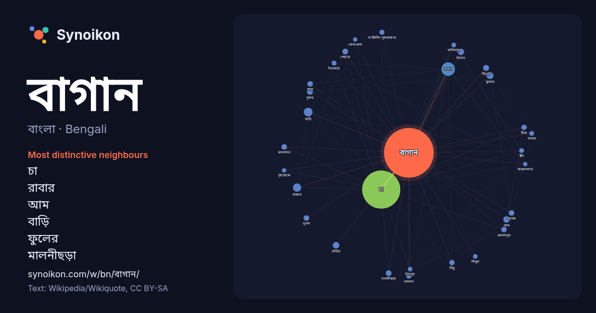

বাংলা · Bengali · word of the day list
বাগান
“garden” · The words found around it in 1140 instances from Bengali Wikipedia, Wikiquote.

Most distinctive neighbours
- চা 238×
- রাবার 64×
- আম 16×
- বাড়ি 16×
- ফুলের 15×
- মালনীছড়া 15×
- পেয়ারা 14×
- চাতলাপুর 14×
- বাজার 13×
- উদ্যান 13×
- লিচু 12×
- পাড়া 12×
- টিলা 12×
- বাড়ির 12×
- দার্জিলিং-পুলবাজার 12×
- ফলের 11×
- জনগণনা 11×
- সিলেট 11×
- গোলাপ 11×
- দাঁতমারা 11×
× = how many times more often than in general Bengali Wikipedia text.
Most frequent neighbours
- চা 610
- রাবার 76
- অবস্থিত 69
- বাড়ি 32
- বাজার 29
- ছোট 22
- বড় 22
- বাংলাদেশের 22
- ফুলের 20
- আম 18
- বাড়ির 18
- উদ্যান 17
- একটা 17
- পূর্ব 17
- জেলার 16
- তৈরি 16
- ভারতের 16
- সিলেট 15
- সুন্দর 15
- অর্থ 14
In context
- শখের বশবর্তী হয়েই মূলতঃ বাগান তৈরী করা হয়। বাগানের সাথে সংশ্লিষ্ট বেতনভূক্ত ব্যক্তি বাগানমালী বা মালী নামে পরিচিত। বাগান অনেক ধরনের হয়ে থাকে। বাড়ীর Wikipedia snippets · বাগান
- মালনীছড়া চা বাগান হল বাংলাদেশের সিলেট জেলায় অবস্থিত একটি চা বাগান। এটি উপমহাদেশের সবচেয়ে প্রাচীন চা বাগান। মালনীছড়া চা বাগান বাংলাদেশ তথা উপমহাদেশের Wikipedia snippets · মালনীছড়া চা বাগান
- পারসিক বাগান বা ইরানি বাগান (ফার্সি: باغ ایرانی) দ্বারা উপস্থাপিত বাগান নকশার ঐতিহ্য এবং শৈলী হল "ভূদৃশ্য" বাগানের একটি শৈলী যা হাখমানেশি সাম্রাজ্যের Wikipedia snippets · পারসিক বাগান
- বানারহাট চা বাগান ভারতের পশ্চিমবঙ্গ রাজ্যের জলপাইগুড়ি জেলার একটি শহর। বানারহাট চা বাগান জনগণনা নগরটি জলপাইগুড়ি জেলার ধুপগুড়ি ব্লকের অন্তর্ভুক্ত৷ এটি Wikipedia snippets · বানরহাট চা বাগান
- বাগান গিরগিটি (বৈজ্ঞানিক নাম: Calotes versicolor) যা ‘রক্তচোষা’ ও 'কাকলাশ' নামে অতি পরিচিত একপ্রকার নিরীহ সরীসৃপ। প্রতিনিয়ত বন-বাগান ও ঝোপঝাড় ধ্বংস Wikipedia snippets · বাগান গিরগিটি
- খৈয়াছড়া চা বাগান, ক্লিফটন চা বাগান ও কর্ণফুলী চা বাগানের পরেই মানের দিক থেকে এখানের উৎপাদিত চায়ের যেমন রয়েছে পুষ্টিগুণ, তেমনি এ বাগানের উৎপাদিত চায়ের Wikipedia snippets · চাঁদপুর বেলগাঁও চা বাগান
- একটি চা বাগান কালাগুল চা বাগান। এর পাশেই বাংলাদেশ তথা উপমহাদেশের বৃহত্তম এবং সর্বপ্রথম প্রতিষ্ঠিত চা বাগান মালনীছড়া চা বাগান ও লাক্কাতুরা চা বাগান অবস্থিত। Wikipedia snippets · কালাগুল চা বাগান
- ঘরোয়া বাগান হল একটা পাত্র হিসেবেও পরিচিত যেটা ফরাসি ভাষায় জার্দিন পটেগার অথবা স্কটল্যান্ডে একে বলা হয় কাইলাইয়ার্ড, বাড়ির লাগোয়া বাগানের বাহারি উদ্ভিদ Wikipedia snippets · ঘরোয়া বাগান
More Bengali words
- অরণ্য
- আয়না
- ইতিহাস
- ঈশ্বর
- কাজ
- কুকুর
- ক্ষমতা
- খাদ্য
- গান
- গ্রীষ্ম
- ঘড়ি
- ঘণ্টা
- ঘোড়া
- ছায়া
- জননী
- জলবায়ু
- জীবন
- ঝড়
- টাকা
- ট্রেন
- দারুচিনি
- দ্বীপ
- নক্ষত্র
- নীরবতা
- পরিবার
- পানি
- পাহাড়
- প্রকৃতি
- বিজ্ঞান
- বিড়াল
- বৃষ্টি
- ভাষা
- মধু
- মরুভূমি
- মানচিত্র
- মৃত্যু
- রাস্তা
- রুটি
- লবণ
- শরৎ
- শহর
- শিল্প
- শীত
- সত্য
- সময়
- সেতু
- সোনা
- স্বাস্থ্য
- হৃদয়
Precomputed on 2026-10-09 with default settings (±5 words, medium corpus). The interactive map can refresh it with live data.